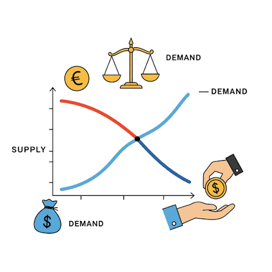
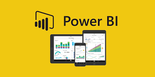
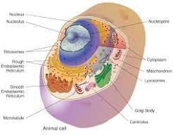

SCHOOL GIVES YOU THE DEGREE. WE HELP YOU BUILD WHAT COMES AFTER.
For students building careers before graduation. Explore roadmaps, skills, opportunities, and the people worth growing with.
The Student Gap
Hard work needs direction.
Many students pass their courses and still feel unsure about what comes next. A.E CONNECT makes the next step easier to see.
See what is worth learning for your program.
Build proof before final year arrives.
Find opportunities while there is still time to act.
Discover paths connected to your course.
Why A.E CONNECT
Less noise. More structure.
A focused place for students who want guidance, not another endless search.
Curated Paths
Start with what matters for where you are now.
Program Roadmaps
Follow a clear path from course to career.
Local Context
Built around the realities students face here.
Timely Opportunities
Scholarships, events, and openings in one place.
Community
Meet students building with the same seriousness.
Room to Grow
Return as your interests, skills, and plans mature.
How It Works
Start with one clear step.
Choose a program. Build from there.
Choose Program
Begin with your course or interest.
Browse Skills
See what strengthens your path.
Find Openings
Track scholarships, events, and internships.
Join Community
Learn beside students moving with intent.
Show Your Work
Graduate with more than a transcript.
Featured Roadmaps
Explore Roadmaps
Build Beyond the Classroom.

Economics
Data, policy, finance, and research skills for early career depth.
Explore roadmap
Computer Science
Projects, tools, and foundations for serious technical work.
Explore roadmap
Business Administration
Practical business skills for leadership, operations, and growth.
Explore roadmap
Nursing
Clinical readiness, patient care, and professional confidence.
Explore roadmapAccounting
Reporting, audit, tax, and finance skills with practical proof.
Explore roadmapPublic Health
Research, data, community work, and field opportunities.
Explore roadmap
Join Your Community
Find your people.
Join students who are learning with direction.
JHS Students
Explore subjects, careers, and early choices with clarity.
Join CommunitySHS Students
Prepare for programs, scholarships, and the next stage.
Join CommunityTertiary Students
Build skills, find openings, and meet serious peers.
Join Community
Student Proof
Work students can point to.
Stories, projects, events, and small wins from students building early.
Proof Worth Showing
Student projects, campus moments, scholarship wins, business showcases, and community milestones.
Student note"I would have started Excel and SQL much earlier if I had seen this roadmap in Level 100."
Student note"The roadmap made my course feel connected to real work."
Founder Story
Built for serious students who need direction.
A.E CONNECT began from a simple observation: many students work hard without a clear map.
This platform connects courses to skills, opportunities, community, and practical next steps.
You do not need to know everything. You need a better place to begin.